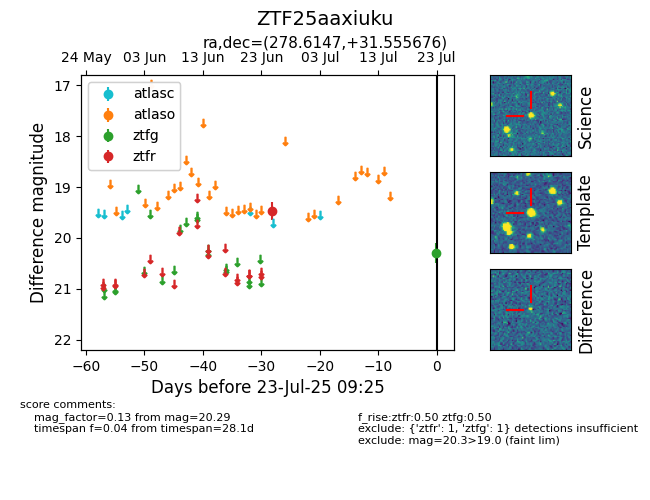

Target ZTF25aaxiuku at 2025-07-23 11:48, see:
FINK: fink-portal.org/ZTF25aaxiuku
Lasair: lasair-ztf.lsst.ac.uk/objects/ZTF25aaxiuku
ALeRCE: alerce.online/object/ZTF25aaxiuku
alt names
ZTF25aaxiuku (ztf,fink)
coordinates:
equatorial (ra, dec) = (278.6147,+31.55568)
galactic (l, b) = (60.1457,+17.14333)
photometry
last ztfg=20.29, ztfr=19.48
1 ztfg, 1 ztfr detections
